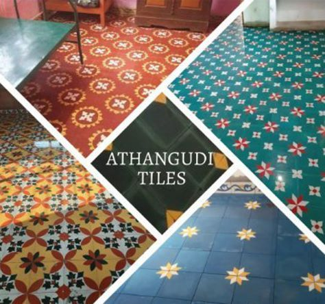

ArtisanHub🎭
"Crafted Community: Celebrating Local Artisans"
Here is a list of local artisans who beautifully showcase Tamil Nadu's rich cultural heritage
through their exquisite craftsmanship🏺:
- Kancheepuram silk weavers
- Thanjavur Doll makers
- Pattamadi Mat weavers
- Cuddalore Terracotta artists
- Karakudi athangudi tile makers
Kancheepuram silk weavers🥻:

Kancheepuram, often referred to as the "Silk City" of India, is renowned for its exquisite silk sarees, a legacy of the region's skilled weavers. These artisans are celebrated for their intricate weaving techniques, producing sarees distinguished by their rich texture, durability, and vibrant colors. Each Kancheepuram saree is a masterpiece, often featuring elaborate zari work in gold and silver threads, with traditional motifs inspired by temples, nature, and mythology. The meticulous craftsmanship and dedication of Kancheepuram's silk weavers have made these sarees a symbol of elegance and cultural heritage, cherished by connoisseurs worldwide.
Thanjavur Doll makers🪆:

Thanjavur doll makers, hailing from the historic town of Thanjavur in Tamil Nadu, are renowned for their distinctive and vibrant Tanjore dolls. These traditional bobblehead dolls, also known as "Thanjavur Thalaiyatti Bommai," are crafted using clay and papier-mâché, characterized by their wobbling heads and colorful, lively designs. The art of making these dolls has been passed down through generations, reflecting the rich cultural heritage and artistic finesse of the region. Thanjavur dolls are not only popular as decorative items but also cherished as symbols of Tamil Nadu's craftsmanship and artistic traditions.
Pattamadi mat weavers🧶:

Pattamadai mat weavers, hailing from the town of Pattamadai in Tamil Nadu's Tirunelveli district, are renowned for their exquisite craftsmanship in creating fine korai grass mats, locally known as "Pattamadai pai." These mats are meticulously handwoven using korai grass, which is specially treated and dyed to achieve a smooth, silk-like texture. The weavers exhibit exceptional skill and patience, often producing intricate patterns and personalized designs. Their artistry has been recognized with numerous accolades, making Pattamadai mats highly prized for their elegance, durability, and cultural significance in Tamil Nadu's rich artisanal heritage.
Cuddalore Terracotta artists🦣:

Cuddalore terracotta artists are renowned for their exceptional craftsmanship in creating terracotta sculptures, a tradition that dates back centuries. These skilled artisans mold and shape clay into intricate forms, often depicting deities, animals, and mythological scenes. Utilizing natural materials and age-old techniques, their work is characterized by its rustic charm and artistic precision. The terracotta pieces from Cuddalore are not only aesthetically pleasing but also culturally significant, reflecting the rich heritage and artistic legacy of Tamil Nadu. These sculptures are widely appreciated for their durability and timeless beauty, making them treasured items in homes and temples alike.
Karakudi athangudi tile makers🏁:

Athangudi tile makers in Karaikudi are renowned for their handcrafted tiles, which are celebrated for their vibrant colors and intricate patterns. These tiles, made from local clay, undergo a meticulous process involving hand-mixing natural dyes, sun-drying, and polishing. The result is a durable and aesthetically pleasing product that reflects the rich Chettinad heritage. Athangudi tiles are not just functional but also a testament to the region's artistic tradition, adding a touch of historical elegance to modern interiors.
For further details, please visit the Indian craft house ,an online platform that offers a wide range of authentic handcrafted products from across India.